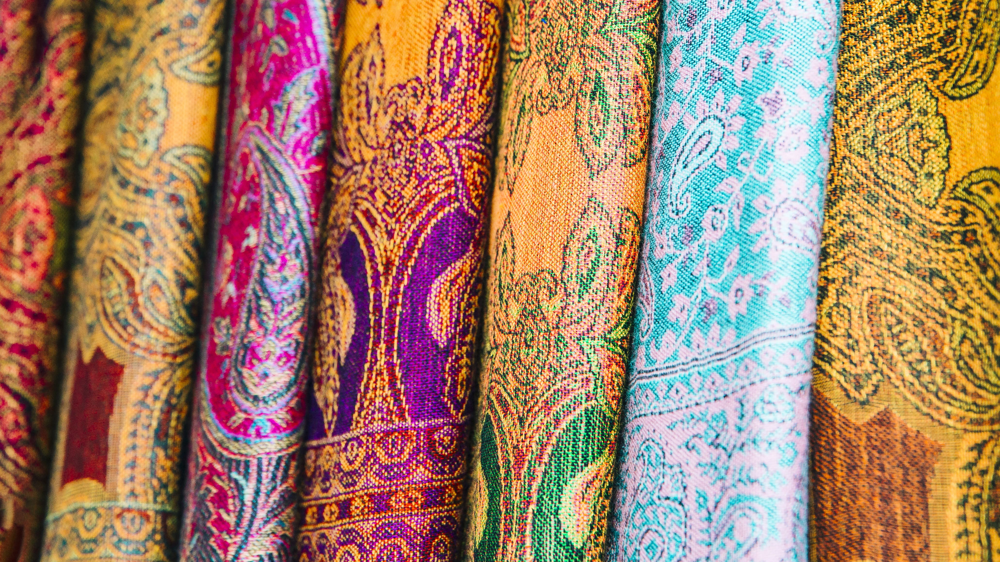
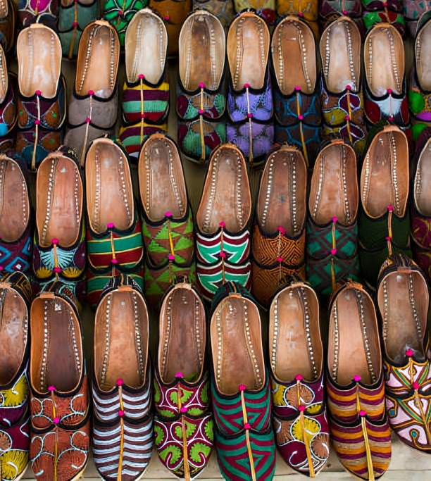
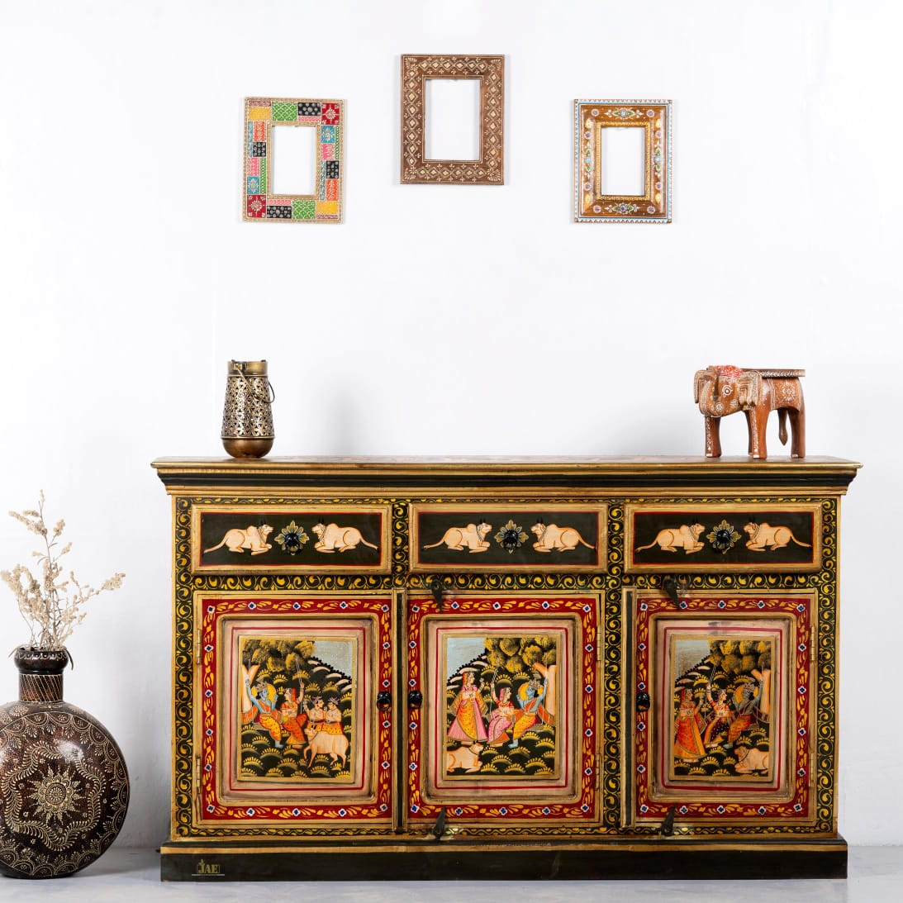
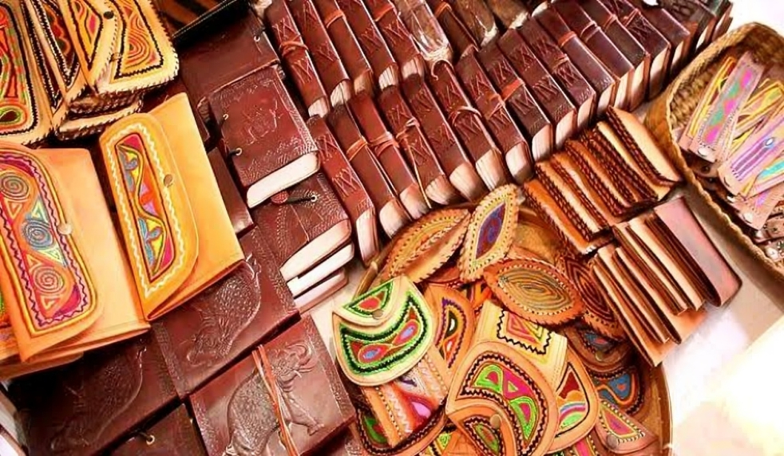

Discover the vibrant art and craft traditions of Jodhpur. From intricate textiles to masterful pottery, delve into the creative practices that define the cultural fabric of this historic city.

Bandhani has been practiced in Rajasthan for thousands of years. The earliest visual evidence of Bandhani is found in the Ajanta caves, which date back to around 6th century CE.
The process involves tying small sections of fabric with thread before dyeing it. After dyeing, the ties are removed, revealing circular patterns. The textiles are often used for traditional attire, especially during festivals and weddings.

Mojris have been an integral part of Rajasthan's cultural attire, tracing their roots back to the Mughal era when they were worn by royalty.
These shoes are made from soft leather, typically camel or buffalo hide, and are decorated with detailed embroidery and embellishments. They are often dyed in bright colors, reflecting the vibrant culture of Rajasthan.

Jodhpur's woodworking tradition dates back to the Marwar kingdom. Artisans have perfected their craft over generations, producing intricate designs that are both functional and decorative.
Handicrafts include furniture like ornate beds and cabinets, as well as decorative items like jewelry boxes and mirrors. The wood used is often teak or sheesham, known for its durability and beauty.

Jodhpur has a long history of leather crafting, particularly camel leather, which has been used for centuries to make durable and practical items.
The leather is often embossed or painted, creating beautiful designs. Products include not just footwear, but also bags, belts, wallets, and even book covers, all prized for their quality and longevity.